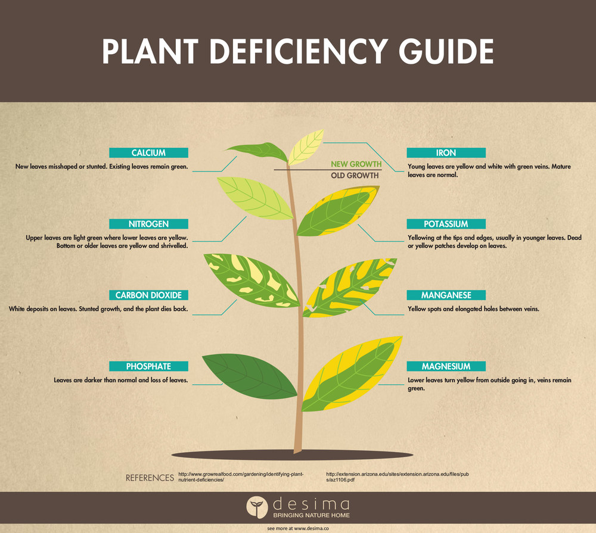

GEETHANJALI INSTITUTE OF SCIENCE AND TECHNOLOGY(NELLORE)
DEPARTMENT OF CYBER SECURITY
SCOPE OF PLANT DISEASES
The study of plant diseases is important as they cause loss to the plant as well as plant produce. The various types of losses occur in the field, in storage or any time between sowing and consumption of produce. The diseases are responsible for direct monitory loss and material loss:
SCOPE OF THE PLANT
Scope and responsibilities of plant pathology is unlimited. Its ultimate goal is to prevent and control plant diseases of economic importance. Responsibilities of the science of plantpathology may be summarized as under.
PROTECTING THE PLANT
On practical aspects much advances have been made in plant protection chemicals; breeding for disease resistance. Increased population emphasizes the application of all possible means to meet the food requirements Expansion of crop area Improved methods of cultivation Increased use of fertilizers Improved varieties Increased irrigation Crop protection.
OBJECTIVES OF THE PLANT
1. To study the living, non-living and environmental causes of plant diseases.(Etiology) 2. To study the mechanisms of disease development by pathogens.(Pathogenesis) 3. To study the interactions between the plants and the pathogen.(Epidemology)
DIAGNOSIS OF THE PLANT
Diagnosis of plant diseases requires consideration of various biotic and abiotic factors which may be involved in the causation of disease, as well as a Fundamentals of the host plant symptoms and signs. Steps in disease diagnosis 1. Identify the host 2.Determine the signs and symptoms of the disease 3. Identify the pathogen 4. Identify the disease 5. Prove pathogenicity
PLANT DISEASE MANAGEMENT
Disease management requires a detail understanding of all aspects of crop production, economics, environmental, cultural, genetics and epidemiological information upon which the management decisions are made..
FACTORS AFFECTING PLANTS
Disease development in brief involves a number of distinct events including the dissemination of pathogen to the host, prepenetration, penetration of the pathogen into the host, invasion and spread of the pathogen, reproduction of pathogen and the survival of pathogen..
NUTRIENT DEFICIENCY
Nutrient deficiency reduces shoot growth and leaf size, cause leaf chlorosis, necrosis and dieback of plant parts. However, nutrient deficiencies cannot be reliably diagnosed on the basis of symptoms alone because numerous other plant problems can produce similar symptoms. There are general symptoms that can be expressed by deficiencies of nutrients but usually leaf and/or soil samples are needed to confirm the problem.

CONDITIONS FOR DISEASE DEVELOPMENT
Disease development is dependent upon three conditions: a susceptible host plant, a favorable environment, and a viable pathogen. All three of these factors must be present for disease to occur.
CROP PROTECTION
The first step towards crop disease management is understanding the essence of an illness and the process of its development. Also, remember that any crop can get sick, and abiotic factors, such as unfavorable weather conditions, weaken the plants and increase the risk of infection.
DISEASE RISK DETECTION
Thus, ongoing disease risk monitoring helps save the plants before the disease spreads on the field and makes irreparable damage to crops. Another pleasant benefit of the new feature is that knowing the risks early also reduces expenses and saves resources on managing crop disease when it has already developed in the field, contributing to sustainable agriculture.
CLIMATE CHANGE
Predicting the impacts of climate change on plant disease is complex and challenging, as multiple aspects of plants, pathogens and the environment are involved. These factors include the distribution and abundance of taxa (geographical range, niche preference), their fitness and virulence, abiotic interactions, plant–microorganism evolutionary processes, host and vector biology, and environmental conditions.
" Plant diseases can reduce human food availability. Modern plant disease management faces problems due to climate change, fungicide resistance, pesticide residues and biodiversity loss. This review discusses problems and challenges in plant disease management and future research needs for effective management. Plant disease forecasting models can be used to predict plant diseases ahead of time.."